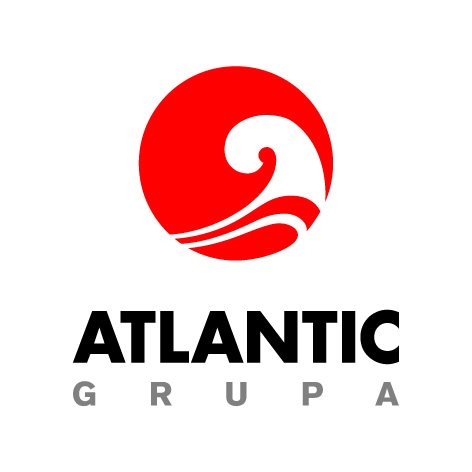

<h1>Sponsors and donors</h1>
<h3 class="border-bottom">The Conference  MIA2014 is supported by:</h3>
<!-- <ul class="unstyled">
  <li><b><a href="http://www.mzos.hr"> Ministarstvo znanosti, obrazovanja i športa</a> </b>
  <li><b><a href="http://www.pbz.hr">Privredna banka Zagreb d.d., Zagreb   </a> </b> </li>
  <li><b><a href="http://www.hazu.hr">Hrvatska akademija znanosti i umjetnosti  </a>  </b></li>
  <li><b><a href="http://www.atlantic.hr">Atlantic Grupa d.o.o., Zagreb  </a>  </b> </li>
  <li><b><a href="http://www.inero.hr"> Inero d.o.o., Split  </a></b> </li>
  <li><b><a href="http://orion.fesb.hr/dotnetnuke/">Fakultet elektrotehnike, strojarstva i brodogradnje, Split </a></b></li>
  <li><b><a href="http://www.ingatest.hr"> Ing Atest d.o.o., Split</a></b></li>
  <li><b><a href="http://www.gradst.hr"> Građevinsko-arhitektonski fakultet, Split</a> </b></li>
  <li><b><a href="http://www.brodosplit.hr"> Brodosplit d.d., Split</a></b></li>
  <li><b><a href="http://www.eihp.hr"> Energetski institut Hrvoje Požar, Zagreb</a></b></li>
  <li><b><a href="http://www.elmap.hr"> ELMAP d.o.o., Podstrana   </a></b></li>
  <li><b><a href="http://www.alearotunda.hr"> Alea Rotunda d.o.o., Zagreb   </a></b></li>
  <li><b><a href="http://www.crs.hr"> Hrvatski Registar Brodova, Split   </a></b></li>
</ul>
<ul class="unstyled append-vertical">
  <li><a href="http://www.pbz.hr"></a></li>
  <li><a href="http://www.atlantic.hr"></a></li>
  <li><a href="http://www.alearotunda.hr"></a></li>
</ul> -->